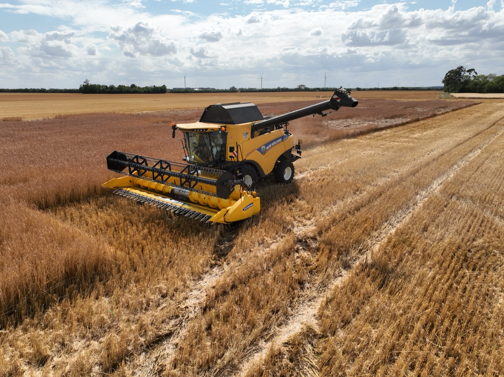
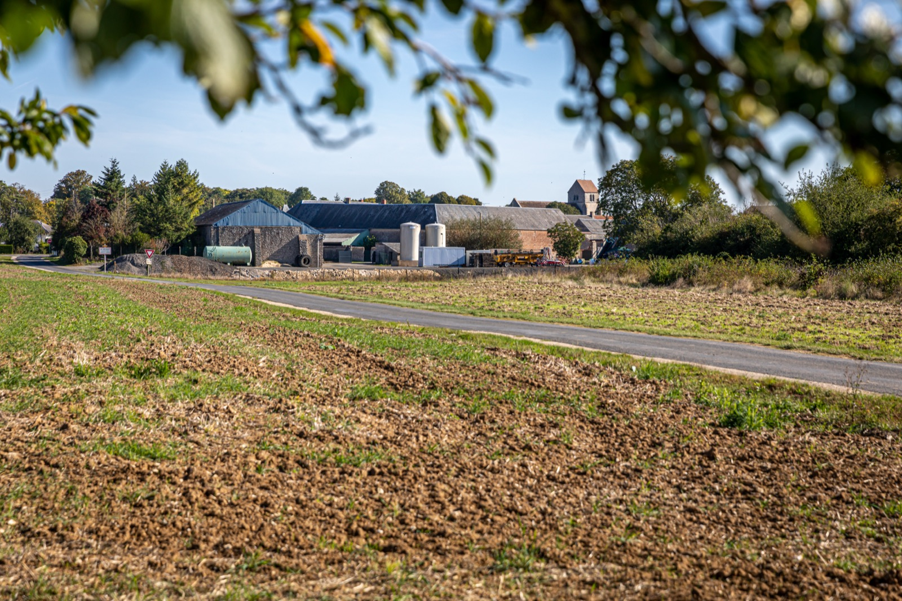
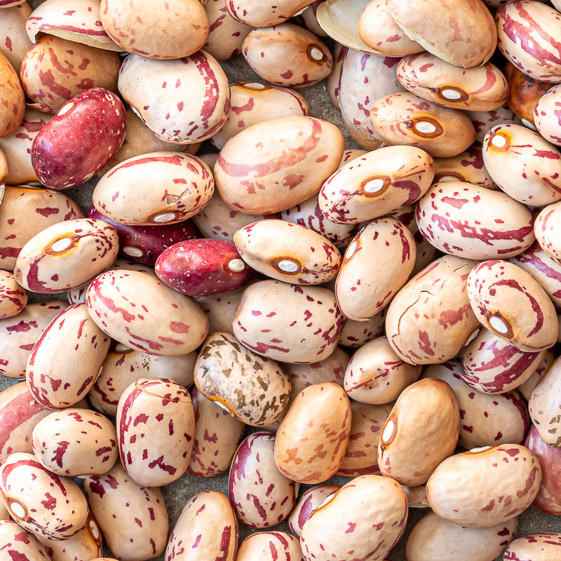

Ferme des 3 Rois
Vente directe au vrac et en sacs kraft cousus de 1, 5 ou 10 kg, pour restaurateurs, collectivités et magasins.
Demander nos tarifs

La Ferme des 3 Rois cultive et transforme, au cœur de la Beauce, des céréales, légumineuses, graines et légumes 100% biologiques — pour les professionnels comme pour les gourmands.
Le groupe familial Ferme des 3 Rois commercialise ses productions sous deux marques, selon que vous cuisinez pour une collectivité ou pour votre table.
Vente directe au vrac et en sacs kraft cousus de 1, 5 ou 10 kg, pour restaurateurs, collectivités et magasins.
Demander nos tarifsLa gamme en sachets compostables de 400 g, à retrouver en épiceries fines, sur les marchés et bientôt en ligne.
Découvrir la gammeTrois univers à découvrir, chacun avec sa propre page.

Depuis 6 générations, Jérémy et Jonathan cultivent 142 hectares en agriculture biologique au cœur de la Beauce. Découvrez notre histoire et nos engagements.
Découvrir notre histoire
Cultivés et conditionnés sur notre exploitation du Puiset, nos produits bio s'invitent aussi bien dans les cuisines professionnelles que familiales.
Voir tous nos produits
Casserole, cocotte-minute ou four : notre fiche temps de cuisson et nos recettes salées et sucrées pour cuisiner nos produits comme des chefs.
Découvrir les recettesParticuliers, boutiques ou professionnels : notre équipe familiale vous répond sous 48h.
Liste de points de vente à titre d'exemple — à personnaliser avec vos revendeurs réels.